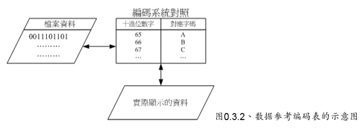
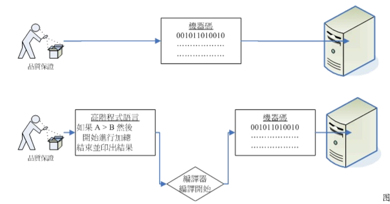
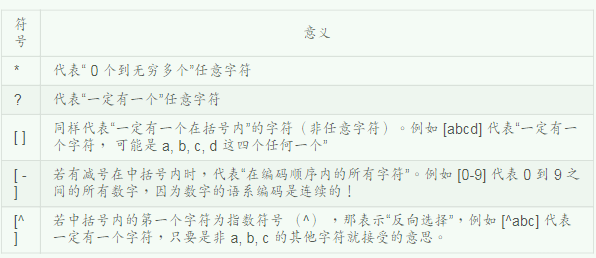
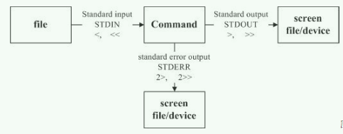
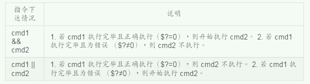
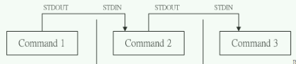
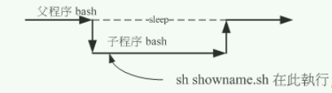

<!DOCTYPE html>


<html lang="zh-CN">


<head>
  <meta charset="utf-8" />
    
  <meta name="viewport" content="width=device-width, initial-scale=1, maximum-scale=1" />
  <title>
    鸟叔的linux私房菜学习笔记 |  VincereZhou&#39;s blog
  </title>
  <meta name="generator" content="hexo-theme-ayer">
  
  <link rel="shortcut icon" href="/favicon.ico" />
  
  
<link rel="stylesheet" href="/dist/main.css">

  <link rel="stylesheet" href="https://cdn.jsdelivr.net/gh/Shen-Yu/cdn/css/remixicon.min.css">
  
<link rel="stylesheet" href="/css/custom.css">

  
  <script src="https://cdn.jsdelivr.net/npm/pace-js@1.0.2/pace.min.js"></script>
  
  

  

<link rel="alternate" href="/atom.xml" title="VincereZhou's blog" type="application/atom+xml">
</head>

</html>

<body>
  <div id="app">
    
      
    <main class="content on">
      <section class="outer">
  <article
  id="post-鸟叔的linux私房菜学习笔记"
  class="article article-type-post"
  itemscope
  itemprop="blogPost"
  data-scroll-reveal
>
  <div class="article-inner">
    
    <header class="article-header">
       
<h1 class="article-title sea-center" style="border-left:0" itemprop="name">
  鸟叔的linux私房菜学习笔记
</h1>
 

    </header>
     
    <div class="article-meta">
      <a href="/2019/09/07/%E9%B8%9F%E5%8F%94%E7%9A%84linux%E7%A7%81%E6%88%BF%E8%8F%9C%E5%AD%A6%E4%B9%A0%E7%AC%94%E8%AE%B0/" class="article-date">
  <time datetime="2019-09-07T02:43:28.000Z" itemprop="datePublished">2019-09-07</time>
</a>   
<div class="word_count">
    <span class="post-time">
        <span class="post-meta-item-icon">
            <i class="ri-quill-pen-line"></i>
            <span class="post-meta-item-text"> 字数统计:</span>
            <span class="post-count">1.6k</span>
        </span>
    </span>

    <span class="post-time">
        &nbsp; | &nbsp;
        <span class="post-meta-item-icon">
            <i class="ri-book-open-line"></i>
            <span class="post-meta-item-text"> 阅读时长≈</span>
            <span class="post-count">5 分钟</span>
        </span>
    </span>
</div>
 
    </div>
      
    <div class="tocbot"></div>


  
    <div class="article-entry" itemprop="articleBody">
       
  <p>个人感觉，鸟叔讲得很细，但是这本书很难坚持看下去，本人都是挑着看的。</p>
<h1 id="第零章、计算机概论"><a href="#第零章、计算机概论" class="headerlink" title="第零章、计算机概论"></a>第零章、计算机概论</h1><p>中央处理器（Central Processing Unit,cpu ）,主要工作是<strong>管理</strong>和<strong>运算</strong>，cpu读取的所有数据均来自于内存，处理后的数据也必须先写回内存。<br>cpu 32位与64位：内存每次传给CPU的数据量，32bit 还是 64bit。所以说64位比32位，内存传给CPU的数据量翻了一倍。<br><strong>双通道</strong>：一条总线的带宽是64位，那么两个就是128位，所以双内存更快。最好两个内存的型号都完全一致。有的主板四条内存插槽的颜色不一样，需要两根容量相同的内存插在相同颜色的插槽当中，才能启用双通道。<br><strong>CPU第二层高速缓存内存</strong>：对于一些很常用的程序或数据可以放置在CPU内部，那么CPU就不用去内存读取数据了，这就是CPU第二层高速缓存的设计概念。</p>
<h3 id="字符编码"><a href="#字符编码" class="headerlink" title="字符编码"></a>字符编码</h3><p>鸟叔的这张图相当形象了。<br></p>
<h3 id="机器语言与高阶程序语言"><a href="#机器语言与高阶程序语言" class="headerlink" title="机器语言与高阶程序语言"></a>机器语言与高阶程序语言</h3><p></p>
<h1 id="linux是什么与如何学习"><a href="#linux是什么与如何学习" class="headerlink" title="linux是什么与如何学习"></a>linux是什么与如何学习</h1><blockquote>
<p>鸟哥上课时，常常有学生问到：“老师，到底要听过你的课几次之后，才能学的会？”鸟 哥的标准答案是：“你永远学不会！”。<strong>因为你是用“听”的，没有动手做</strong>，那么永远不会知道“经 验”两个字怎么写!<br>windows救命三键（Ctrl+Alt+Delete）</p>
</blockquote>
<h1 id="首次登录"><a href="#首次登录" class="headerlink" title="首次登录"></a>首次登录</h1><ul>
<li>shell中通过<strong>空格</strong>来区分命令，但是多个空格仍只会视为一个空格。</li>
<li><strong>tab</strong>：一次tab键<strong>命令补全</strong>，两次tab显示所有以输入字符开头的命令</li>
<li>ctrl+c：结束正在运行的命令</li>
<li><strong>ctrl+d</strong>：直接离开命令行（相当于exit) </li>
<li>shift+pageUp/pageDown：返回上次命令输出结果（相当于用鼠标滑轮）。</li>
</ul>
<h3 id="帮助文档"><a href="#帮助文档" class="headerlink" title="帮助文档"></a>帮助文档</h3><ul>
<li>date <strong>–help</strong>: 简短说明</li>
<li><strong>man</strong> date: 详细说明。输入**/string<strong>，向下搜寻string这个字符串。输入</strong>?string**，向上搜索。</li>
</ul>
<h3 id="文件权限"><a href="#文件权限" class="headerlink" title="文件权限"></a>文件权限</h3><ul>
<li>r(read) : 可读取此文件的内容</li>
<li>w(write): 可以修改文件内容（但不能删除该文件）</li>
<li>x(execute): 可以被系统执行</li>
</ul>
<h3 id="目录权限"><a href="#目录权限" class="headerlink" title="目录权限"></a>目录权限</h3><ul>
<li>r(read) : 可读取该目录结构，即查询该目录下的文件名数据，可以使用ls命令。</li>
<li>**w(write)**：可执行操作如下<ul>
<li>创建新的文件和目录</li>
<li><strong>删除</strong>已存在的文件或目录</li>
<li>将已存在的文件或目录进行更名</li>
<li>移动该目录下的文件、目录位置</li>
</ul>
</li>
<li>x(execute): 能否进入该目录，使之成为工作目录<br>目录当然没有所谓的<strong>执行</strong>能力，这里的执行权限是指能不能直接进入该目录，用命令来说，就是能不能cd到该目录。<strong>如果不给x权限，w权限也没办法实现</strong></li>
</ul>
<h3 id="权限管理总结"><a href="#权限管理总结" class="headerlink" title="权限管理总结"></a>权限管理总结</h3><p>需要给别人浏览的文件，<strong>目录</strong>需要提供<strong>r</strong>和<strong>x</strong>权限，<strong>文件</strong>需提供<strong>r</strong>权限。<strong>w</strong>权限需谨慎开放。</p>
<h1 id="Linux文件与目录管理"><a href="#Linux文件与目录管理" class="headerlink" title="Linux文件与目录管理"></a>Linux文件与目录管理</h1><h2 id="环境变量"><a href="#环境变量" class="headerlink" title="环境变量"></a>环境变量</h2><p>通过<strong>echo $PATH</strong> 查看环境变量。设置环境变量的作用：运行程序时不用加路径，比如直接写plink，而不用写./plink。</p>
<ul>
<li>所有用户在PATH变量中都有/bin 或 /usr/bin 这个目录。这两个目录是一样的，因为/bin 是 /usr/bin的链接。</li>
<li>环境变量有<strong>顺序</strong>的区别，系统会按照顺序依次查找各个文件夹</li>
<li>添加环境目录<ul>
<li>把当前的目录放入环境变量中。参考以下网页<a target="_blank" rel="noopener" href="https://blog.csdn.net/yi412/article/details/11523525">linux 环境变量设置（临时 + 永久）</a>。</li>
<li>将程序或链接放在已在环境变量的目录中。个人常用，感觉更简单。</li>
</ul>
</li>
</ul>
<h2 id="查找文件"><a href="#查找文件" class="headerlink" title="查找文件"></a>查找文件</h2><ul>
<li><strong>which</strong> 在PATH变量中搜索，并返回第一个搜索结果。 -a 列出所有结果</li>
<li><strong>whereis</strong> 只在特定的几个目录查找文件，感觉不实用。可以通过whereis -l 查看whereis查看的目录名称。</li>
<li><strong>locate</strong> 在数据库中查找，速度很快。但是数据库每天更新一次，因此最新创建的文件可能找不到，需要更新数据库（使用命令updatedb，需要root权限）。</li>
<li><strong>find</strong> 直接查找硬盘，速度慢。最后指定查找目录，缩小查找范围。</li>
</ul>
<h1 id="vim编辑器"><a href="#vim编辑器" class="headerlink" title="vim编辑器"></a>vim编辑器</h1><p>基本上 vi/vim 共分为三种模式，分别是一般模式或命令模式（Command mode），输入模式（Insert mode）和底线命令模式（Last line mode）。但其实底线命令模式也是在一般模式下输入的。</p>
<h2 id="一般模式（命令模式）"><a href="#一般模式（命令模式）" class="headerlink" title="一般模式（命令模式）"></a>一般模式（命令模式）</h2><ul>
<li><strong>/word</strong> <strong>向下</strong>寻找word（?word，向上）；通过<strong>n/N</strong>切换下（上）一个</li>
<li>:n1,n2s/word1/word2/g  从n1行到n2行查找word1,并替换为word2</li>
<li>1,$s/word1/word2/g   从第一行到最后一行查找替换</li>
</ul>
<h2 id="一般指令模式切换到编辑模式的可用的按钮说明"><a href="#一般指令模式切换到编辑模式的可用的按钮说明" class="headerlink" title="一般指令模式切换到编辑模式的可用的按钮说明"></a>一般指令模式切换到编辑模式的可用的按钮说明</h2><ul>
<li>:wq </li>
<li>:wq! 强制写入</li>
<li>:w [filename] 另存为</li>
<li>set nu/nonu  显示/不显示行号</li>
</ul>
<h1 id="认识和学习BASH"><a href="#认识和学习BASH" class="headerlink" title="认识和学习BASH"></a>认识和学习BASH</h1><h2 id="万用字符（wildcard）"><a href="#万用字符（wildcard）" class="headerlink" title="万用字符（wildcard）"></a>万用字符（wildcard）</h2><p>bash 支持万用字符（和正则表达式有区别），如用在ls命令中。<br></p>
<h2 id="数据流重导向"><a href="#数据流重导向" class="headerlink" title="数据流重导向"></a>数据流重导向</h2><p>standard output（标准输出）和 standard error output （标准错误输出）<strong>默认打印在屏幕上</strong>。</p>
<ul>
<li>标准输入，输出，错误输出代码分别为0，1，2。</li>
<li><blockquote>
<blockquote>
<p>追加，当文件不存在时主动创建，存在时追加。</p>
</blockquote>
</blockquote>
</li>
</ul>
<p></p>
<h2 id="amp-amp-与"><a href="#amp-amp-与" class="headerlink" title="&amp;&amp; 与 ||"></a>&amp;&amp; 与 ||</h2><p></p>
<h2 id="管道命令"><a href="#管道命令" class="headerlink" title="管道命令"></a>管道命令</h2><p>管道命令仅会处理standard output，对于 standard error output 会予以忽略。<br></p>
<h1 id="shell-编程"><a href="#shell-编程" class="headerlink" title="shell 编程"></a>shell 编程</h1><p>shell 编程主要是用在<strong>系统管理</strong>上，不适合复杂的数据处理。</p>
<ul>
<li>多个空格视为一个空格</li>
<li>赋值（=）前后不能有空格</li>
<li>第一行必须为**/#!/bin/bash**，表明这个文件内的语法使用bash的语法</li>
<li>运行shell程序<ul>
<li>直接运行（首先具有rx权限）<ul>
<li>绝对路径：/home/dmtsai/shell.sh</li>
<li>相对路径：./shell.sh</li>
<li>PATH路径中：shell.sh</li>
</ul>
</li>
<li>以bash程序来执行（不需要权限，更方便）<ul>
<li>bash shell.sh 或 sh shell.sh </li>
</ul>
</li>
</ul>
</li>
<li>运行shell程序其实是在<strong>子程序</strong>的bash内执行的。（通过sourse命令在父程序中直接运行）<br></li>
</ul>
<h1 id="账号管理"><a href="#账号管理" class="headerlink" title="账号管理"></a>账号管理</h1><h2 id="切换账号"><a href="#切换账号" class="headerlink" title="切换账号"></a>切换账号</h2><ul>
<li>su - 切换为root账号</li>
<li>su zhouzw 切换为普通账号</li>
</ul>
<h1 id="程序管理"><a href="#程序管理" class="headerlink" title="程序管理"></a>程序管理</h1><h2 id="工作管理（job-control）"><a href="#工作管理（job-control）" class="headerlink" title="工作管理（job control）"></a>工作管理（job control）</h2><p>通过<strong>jobs -l</strong> 可以查看使用&amp;放入后台的程序的PID，然后就可以用kill命令杀掉后台程序。kill命令一般不建议使用-9选项强制关闭。</p>
 
      <!-- reward -->
      
    </div>
    

    <!-- copyright -->
    
    <div class="declare">
      <ul class="post-copyright">
        <li>
          <i class="ri-copyright-line"></i>
          <strong>版权声明： </strong>
          
          本博客所有文章除特别声明外，著作权归作者所有。转载请注明出处！
          
        </li>
      </ul>
    </div>
    
    <footer class="article-footer">
       
<div class="share-btn">
      <span class="share-sns share-outer">
        <i class="ri-share-forward-line"></i>
        分享
      </span>
      <div class="share-wrap">
        <i class="arrow"></i>
        <div class="share-icons">
          
          <a class="weibo share-sns" href="javascript:;" data-type="weibo">
            <i class="ri-weibo-fill"></i>
          </a>
          <a class="weixin share-sns wxFab" href="javascript:;" data-type="weixin">
            <i class="ri-wechat-fill"></i>
          </a>
          <a class="qq share-sns" href="javascript:;" data-type="qq">
            <i class="ri-qq-fill"></i>
          </a>
          <a class="douban share-sns" href="javascript:;" data-type="douban">
            <i class="ri-douban-line"></i>
          </a>
          <!-- <a class="qzone share-sns" href="javascript:;" data-type="qzone">
            <i class="icon icon-qzone"></i>
          </a> -->
          
          <a class="facebook share-sns" href="javascript:;" data-type="facebook">
            <i class="ri-facebook-circle-fill"></i>
          </a>
          <a class="twitter share-sns" href="javascript:;" data-type="twitter">
            <i class="ri-twitter-fill"></i>
          </a>
          <a class="google share-sns" href="javascript:;" data-type="google">
            <i class="ri-google-fill"></i>
          </a>
        </div>
      </div>
</div>

<div class="wx-share-modal">
    <a class="modal-close" href="javascript:;"><i class="ri-close-circle-line"></i></a>
    <p>扫一扫，分享到微信</p>
    <div class="wx-qrcode">
      
    </div>
</div>

<div id="share-mask"></div>  
    </footer>
  </div>

   
  <nav class="article-nav">
    
      <a href="/2019/09/07/%E4%B8%80%E4%BB%BD%EF%BC%88%E4%B8%8D%E5%A4%AA%EF%BC%89%E7%AE%80%E7%9F%AD%E7%9A%84LaTex%E4%BB%8B%E7%BB%8D%E5%AD%A6%E4%B9%A0%E7%AC%94%E8%AE%B0/" class="article-nav-link">
        <strong class="article-nav-caption">上一篇</strong>
        <div class="article-nav-title">
          
            一份（不太）简短的LaTex介绍学习笔记
          
        </div>
      </a>
    
    
      <a href="/2019/09/06/word%E6%8E%92%E7%89%88%E5%AD%A6%E4%B9%A0%E7%AC%94%E8%AE%B0%E4%B8%80/" class="article-nav-link">
        <strong class="article-nav-caption">下一篇</strong>
        <div class="article-nav-title">word排版学习笔记一</div>
      </a>
    
  </nav>

   
<!-- valine评论 -->
<div id="vcomments-box">
  <div id="vcomments"></div>
</div>
<script src="//cdn1.lncld.net/static/js/3.0.4/av-min.js"></script>
<script src="https://cdn.jsdelivr.net/npm/valine@1.4.14/dist/Valine.min.js"></script>
<script>
  new Valine({
    el: "#vcomments",
    app_id: "",
    app_key: "",
    path: window.location.pathname,
    avatar: "monsterid",
    placeholder: "给我的文章加点评论吧~",
    recordIP: true,
  });
  const infoEle = document.querySelector("#vcomments .info");
  if (infoEle && infoEle.childNodes && infoEle.childNodes.length > 0) {
    infoEle.childNodes.forEach(function (item) {
      item.parentNode.removeChild(item);
    });
  }
</script>
<style>
  #vcomments-box {
    padding: 5px 30px;
  }

  @media screen and (max-width: 800px) {
    #vcomments-box {
      padding: 5px 0px;
    }
  }

  #vcomments-box #vcomments {
    background-color: #fff;
  }

  .v .vlist .vcard .vh {
    padding-right: 20px;
  }

  .v .vlist .vcard {
    padding-left: 10px;
  }
</style>

 
   
     
</article>

</section>
      <footer class="footer">
  <div class="outer">
    <ul>
      <li>
        Copyrights &copy;
        2019-2021
        <i class="ri-heart-fill heart_icon"></i> Vincere Zhou
      </li>
    </ul>
    <ul>
      <li>
        
        
        
        由 <a href="https://hexo.io" target="_blank">Hexo</a> 强力驱动
        <span class="division">|</span>
        主题 - <a href="https://github.com/Shen-Yu/hexo-theme-ayer" target="_blank">Ayer</a>
        
      </li>
    </ul>
    <ul>
      <li>
        
        
        <span>
  <span><i class="ri-user-3-fill"></i>访问人数:<span id="busuanzi_value_site_uv"></span></s>
  <span class="division">|</span>
  <span><i class="ri-eye-fill"></i>浏览次数:<span id="busuanzi_value_page_pv"></span></span>
</span>
        
      </li>
    </ul>
    <ul>
      
    </ul>
    <ul>
      
    </ul>
    <ul>
      <li>
        <!-- cnzz统计 -->
        
        <script type="text/javascript" src='https://s9.cnzz.com/z_stat.php?id=1278069914&amp;web_id=1278069914'></script>
        
      </li>
    </ul>
  </div>
</footer>
      <div class="float_btns">
        <div class="totop" id="totop">
  <i class="ri-arrow-up-line"></i>
</div>

<div class="todark" id="todark">
  <i class="ri-moon-line"></i>
</div>

      </div>
    </main>
    <aside class="sidebar on">
      <button class="navbar-toggle"></button>
<nav class="navbar">
  
  <div class="logo">
    <a href="/"></a>
  </div>
  
  <ul class="nav nav-main">
    
    <li class="nav-item">
      <a class="nav-item-link" href="/">主页</a>
    </li>
    
    <li class="nav-item">
      <a class="nav-item-link" href="/archives">归档</a>
    </li>
    
    <li class="nav-item">
      <a class="nav-item-link" href="/categories">分类</a>
    </li>
    
    <li class="nav-item">
      <a class="nav-item-link" href="/tags">标签</a>
    </li>
    
    <li class="nav-item">
      <a class="nav-item-link" href="/friends">友链</a>
    </li>
    
    <li class="nav-item">
      <a class="nav-item-link" href="/about">关于我</a>
    </li>
    
  </ul>
</nav>
<nav class="navbar navbar-bottom">
  <ul class="nav">
    <li class="nav-item">
      
      <a class="nav-item-link nav-item-search"  title="搜索">
        <i class="ri-search-line"></i>
      </a>
      
      
      <a class="nav-item-link" target="_blank" href="/atom.xml" title="RSS Feed">
        <i class="ri-rss-line"></i>
      </a>
      
    </li>
  </ul>
</nav>
<div class="search-form-wrap">
  <div class="local-search local-search-plugin">
  <input type="search" id="local-search-input" class="local-search-input" placeholder="Search...">
  <div id="local-search-result" class="local-search-result"></div>
</div>
</div>
    </aside>
    <script>
      if (window.matchMedia("(max-width: 768px)").matches) {
        document.querySelector('.content').classList.remove('on');
        document.querySelector('.sidebar').classList.remove('on');
      }
    </script>
    <div id="mask"></div>

<!-- #reward -->
<div id="reward">
  <span class="close"><i class="ri-close-line"></i></span>
  <p class="reward-p"><i class="ri-cup-line"></i>请我喝杯咖啡吧~</p>
  <div class="reward-box">
    
    <div class="reward-item">
      
      <span class="reward-type">支付宝</span>
    </div>
    
    
    <div class="reward-item">
      
      <span class="reward-type">微信</span>
    </div>
    
  </div>
</div>
    
<script src="/js/jquery-2.0.3.min.js"></script>


<script src="/js/lazyload.min.js"></script>

<!-- Tocbot -->


<script src="/js/tocbot.min.js"></script>

<script>
  tocbot.init({
    tocSelector: '.tocbot',
    contentSelector: '.article-entry',
    headingSelector: 'h1, h2, h3, h4, h5, h6',
    hasInnerContainers: true,
    scrollSmooth: true,
    scrollContainer: 'main',
    positionFixedSelector: '.tocbot',
    positionFixedClass: 'is-position-fixed',
    fixedSidebarOffset: 'auto'
  });
</script>

<script src="https://cdn.jsdelivr.net/npm/jquery-modal@0.9.2/jquery.modal.min.js"></script>
<link rel="stylesheet" href="https://cdn.jsdelivr.net/npm/jquery-modal@0.9.2/jquery.modal.min.css">
<script src="https://cdn.jsdelivr.net/npm/justifiedGallery@3.7.0/dist/js/jquery.justifiedGallery.min.js"></script>

<script src="/dist/main.js"></script>

<!-- ImageViewer -->

<!-- Root element of PhotoSwipe. Must have class pswp. -->
<div class="pswp" tabindex="-1" role="dialog" aria-hidden="true">

    <!-- Background of PhotoSwipe. 
         It's a separate element as animating opacity is faster than rgba(). -->
    <div class="pswp__bg"></div>

    <!-- Slides wrapper with overflow:hidden. -->
    <div class="pswp__scroll-wrap">

        <!-- Container that holds slides. 
            PhotoSwipe keeps only 3 of them in the DOM to save memory.
            Don't modify these 3 pswp__item elements, data is added later on. -->
        <div class="pswp__container">
            <div class="pswp__item"></div>
            <div class="pswp__item"></div>
            <div class="pswp__item"></div>
        </div>

        <!-- Default (PhotoSwipeUI_Default) interface on top of sliding area. Can be changed. -->
        <div class="pswp__ui pswp__ui--hidden">

            <div class="pswp__top-bar">

                <!--  Controls are self-explanatory. Order can be changed. -->

                <div class="pswp__counter"></div>

                <button class="pswp__button pswp__button--close" title="Close (Esc)"></button>

                <button class="pswp__button pswp__button--share" style="display:none" title="Share"></button>

                <button class="pswp__button pswp__button--fs" title="Toggle fullscreen"></button>

                <button class="pswp__button pswp__button--zoom" title="Zoom in/out"></button>

                <!-- Preloader demo http://codepen.io/dimsemenov/pen/yyBWoR -->
                <!-- element will get class pswp__preloader--active when preloader is running -->
                <div class="pswp__preloader">
                    <div class="pswp__preloader__icn">
                        <div class="pswp__preloader__cut">
                            <div class="pswp__preloader__donut"></div>
                        </div>
                    </div>
                </div>
            </div>

            <div class="pswp__share-modal pswp__share-modal--hidden pswp__single-tap">
                <div class="pswp__share-tooltip"></div>
            </div>

            <button class="pswp__button pswp__button--arrow--left" title="Previous (arrow left)">
            </button>

            <button class="pswp__button pswp__button--arrow--right" title="Next (arrow right)">
            </button>

            <div class="pswp__caption">
                <div class="pswp__caption__center"></div>
            </div>

        </div>

    </div>

</div>

<link rel="stylesheet" href="https://cdn.jsdelivr.net/npm/photoswipe@4.1.3/dist/photoswipe.min.css">
<link rel="stylesheet" href="https://cdn.jsdelivr.net/npm/photoswipe@4.1.3/dist/default-skin/default-skin.min.css">
<script src="https://cdn.jsdelivr.net/npm/photoswipe@4.1.3/dist/photoswipe.min.js"></script>
<script src="https://cdn.jsdelivr.net/npm/photoswipe@4.1.3/dist/photoswipe-ui-default.min.js"></script>

<script>
    function viewer_init() {
        let pswpElement = document.querySelectorAll('.pswp')[0];
        let $imgArr = document.querySelectorAll(('.article-entry img:not(.reward-img)'))

        $imgArr.forEach(($em, i) => {
            $em.onclick = () => {
                // slider展开状态
                // todo: 这样不好，后面改成状态
                if (document.querySelector('.left-col.show')) return
                let items = []
                $imgArr.forEach(($em2, i2) => {
                    let img = $em2.getAttribute('data-idx', i2)
                    let src = $em2.getAttribute('data-target') || $em2.getAttribute('src')
                    let title = $em2.getAttribute('alt')
                    // 获得原图尺寸
                    const image = new Image()
                    image.src = src
                    items.push({
                        src: src,
                        w: image.width || $em2.width,
                        h: image.height || $em2.height,
                        title: title
                    })
                })
                var gallery = new PhotoSwipe(pswpElement, PhotoSwipeUI_Default, items, {
                    index: parseInt(i)
                });
                gallery.init()
            }
        })
    }
    viewer_init()
</script>

<!-- MathJax -->

<!-- Katex -->

<!-- busuanzi  -->


<script src="/js/busuanzi-2.3.pure.min.js"></script>


<!-- ClickLove -->

<!-- ClickBoom1 -->

<!-- ClickBoom2 -->

<!-- CodeCopy -->


<link rel="stylesheet" href="/css/clipboard.css">

<script src="https://cdn.jsdelivr.net/npm/clipboard@2/dist/clipboard.min.js"></script>
<script>
  function wait(callback, seconds) {
    var timelag = null;
    timelag = window.setTimeout(callback, seconds);
  }
  !function (e, t, a) {
    var initCopyCode = function(){
      var copyHtml = '';
      copyHtml += '<button class="btn-copy" data-clipboard-snippet="">';
      copyHtml += '<i class="ri-file-copy-2-line"></i><span>COPY</span>';
      copyHtml += '</button>';
      $(".highlight .code pre").before(copyHtml);
      $(".article pre code").before(copyHtml);
      var clipboard = new ClipboardJS('.btn-copy', {
        target: function(trigger) {
          return trigger.nextElementSibling;
        }
      });
      clipboard.on('success', function(e) {
        let $btn = $(e.trigger);
        $btn.addClass('copied');
        let $icon = $($btn.find('i'));
        $icon.removeClass('ri-file-copy-2-line');
        $icon.addClass('ri-checkbox-circle-line');
        let $span = $($btn.find('span'));
        $span[0].innerText = 'COPIED';
        
        wait(function () { // 等待两秒钟后恢复
          $icon.removeClass('ri-checkbox-circle-line');
          $icon.addClass('ri-file-copy-2-line');
          $span[0].innerText = 'COPY';
        }, 2000);
      });
      clipboard.on('error', function(e) {
        e.clearSelection();
        let $btn = $(e.trigger);
        $btn.addClass('copy-failed');
        let $icon = $($btn.find('i'));
        $icon.removeClass('ri-file-copy-2-line');
        $icon.addClass('ri-time-line');
        let $span = $($btn.find('span'));
        $span[0].innerText = 'COPY FAILED';
        
        wait(function () { // 等待两秒钟后恢复
          $icon.removeClass('ri-time-line');
          $icon.addClass('ri-file-copy-2-line');
          $span[0].innerText = 'COPY';
        }, 2000);
      });
    }
    initCopyCode();
  }(window, document);
</script>


<!-- CanvasBackground -->


    
  </div>
</body>

</html>